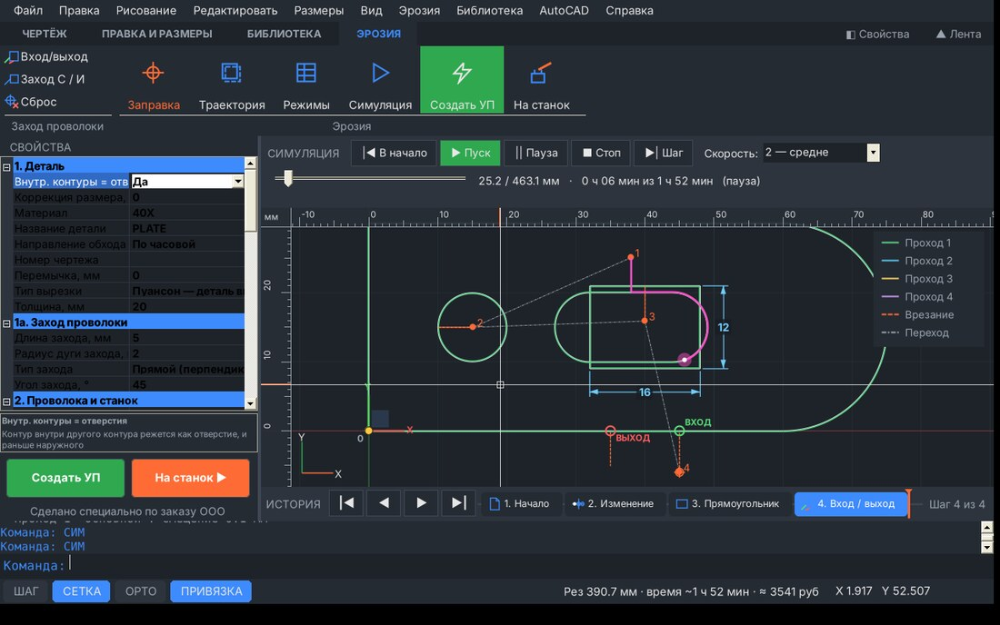
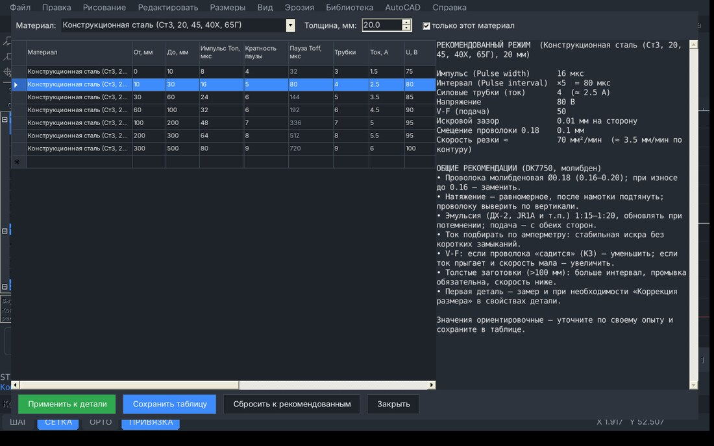
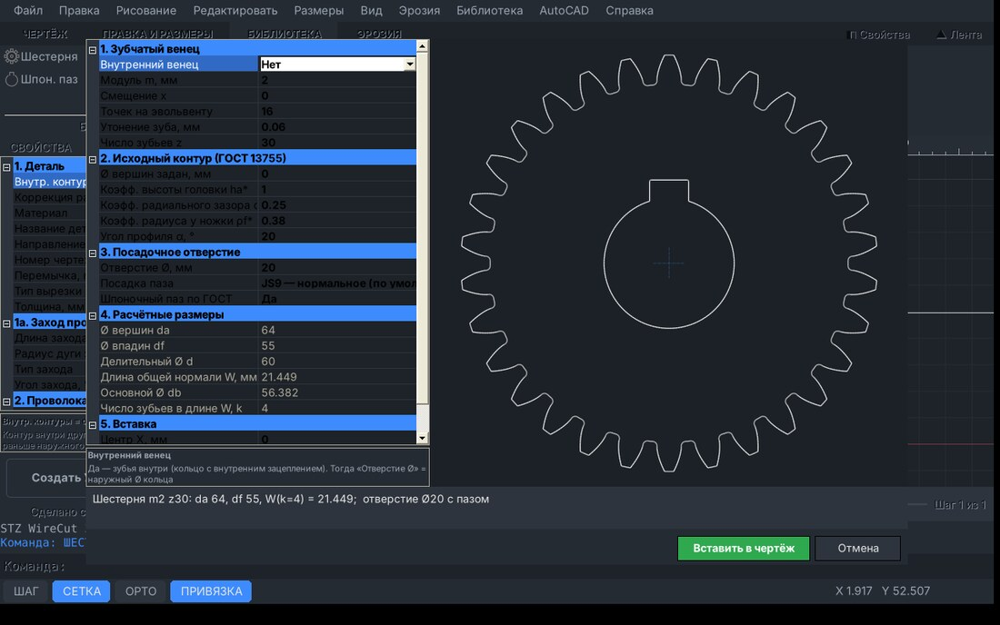
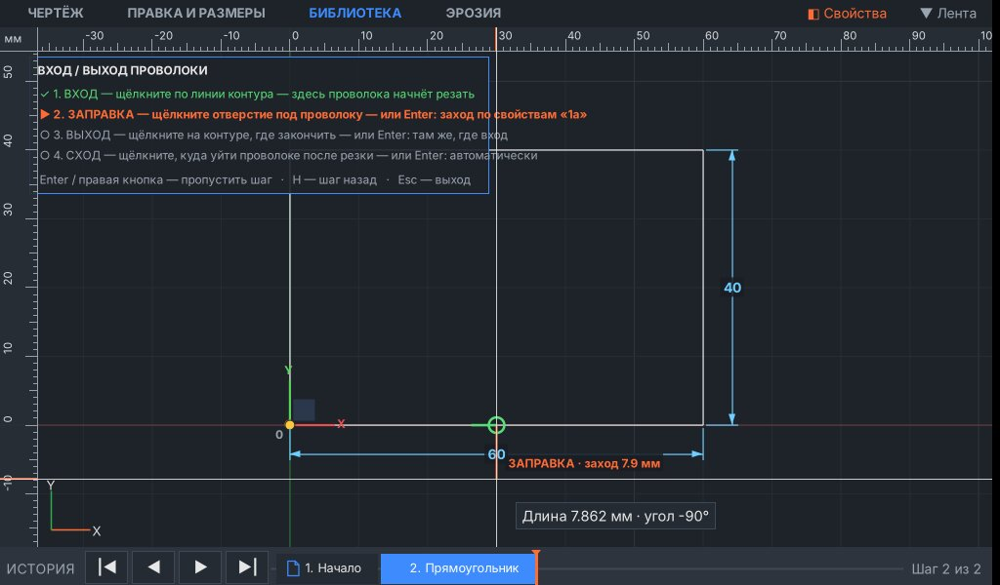
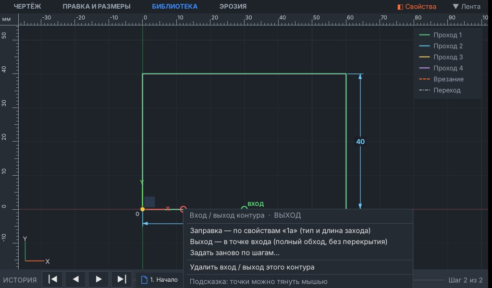
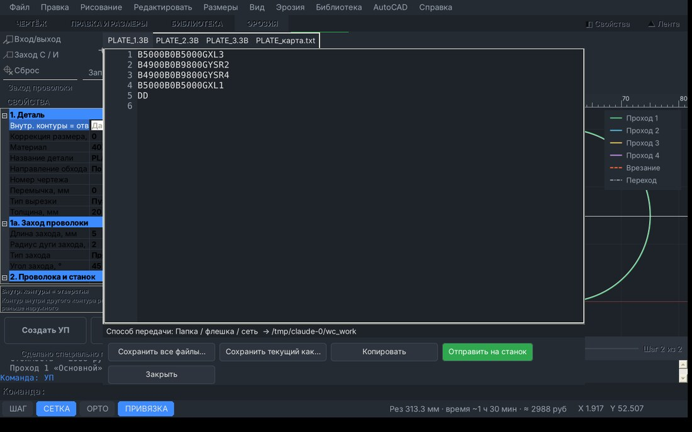
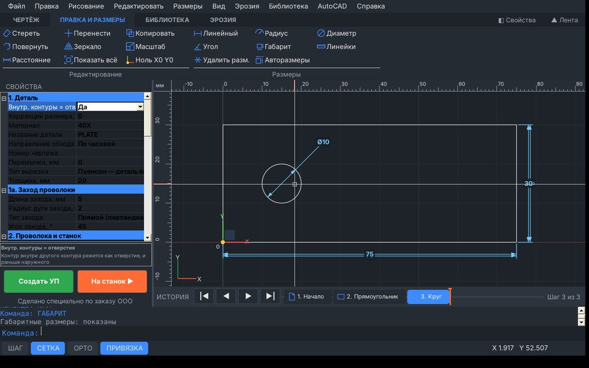
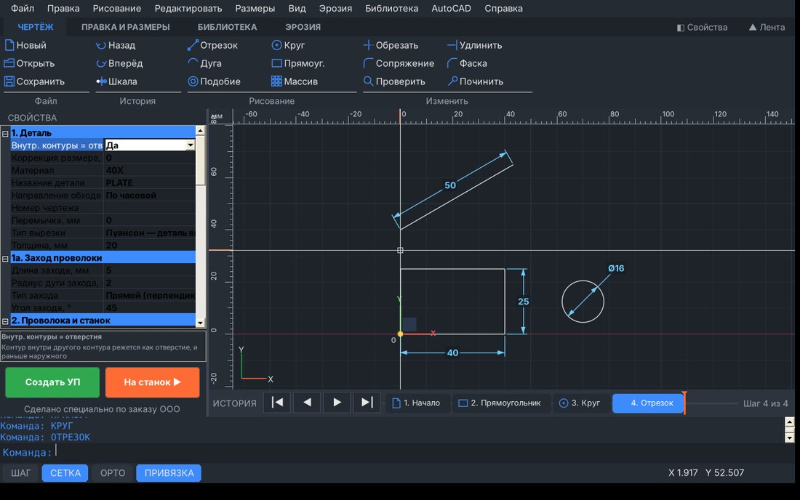
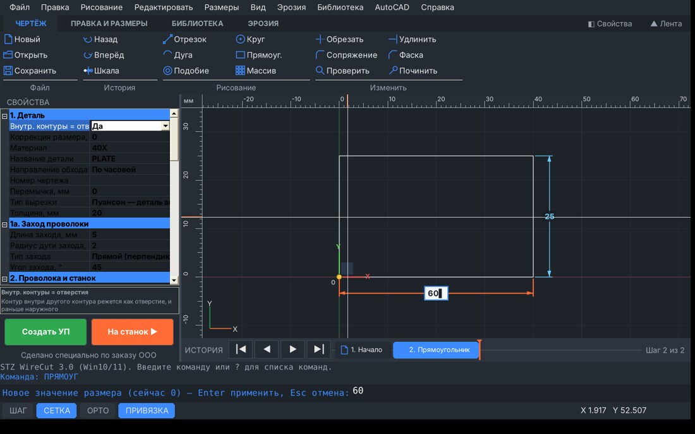

| Версия | Что появилось и где найти |
|---|---|
| 3.3 | Открытие DWG (AutoCAD). «Файл → Открыть DXF / DWG…» (Ctrl+O): в окне выбора видны .dxf и .dwg. DWG переводится в DXF встроенным конвертером (LibreDWG) или бесплатным ODA File Converter, если он установлен. В Проводнике: правая кнопка по DWG → «Открыть с помощью» → STZ WireCut (раздел 1а). |
| 3.2 | Папка станка — вручную. Меню «Эрозия → Папка станка…» (команда ПАПКА) или «Свойства → 5. Связь со станком → Папка станка» — кнопка «…» или впишите путь. Папка запоминается; «На станок» и окно УП пишут только туда (раздел 8).Режимы резания — вручную. «Свойства → 3. Проходы (режимы)»: впишите свои Ton, Toff, ток, трубки, V-F, зазор в «Проход 1…4» — параметр «Режимы вручную» станет «Да», и программа больше не заменит их таблицей при смене материала или толщины. «Нет» — снова из таблицы (раздел 5а). |
| 3.1 | Понятный вход / выход проволоки. Подсказка по 4 шагам прямо на чертеже, стрелка направления резки, предпросмотр перекрытия и перемычки с длиной, Н — шаг назад. Готовые точки ВХОД, ЗАПРАВКА, ВЫХОД, СХОД тянутся мышью, правая кнопка по точке — меню правки (раздел 7а).Удаление шага истории. Правая кнопка по шагу на шкале под чертежом — «Удалить этот шаг», «Вернуться к шагу», «Удалить все шаги до этого», «Очистить историю» (раздел 9а). |
| 3.0 | Для маленького монитора станка: 4 вкладки ленты в одну строку, сворачивание ленты (Ctrl+F1) и панели свойств (F2). Кнопка «На станок ▶» (Ctrl+F10) — УП сразу в папку станка без окна УП (раздел 8). |
WCUT (раздел 9). Или «Библиотека» — шестерня, шлицы, шпоночный паз. Или начертить самому.Work программы AutoCut, флешка или сеть. Запоминается..3B сразу в папку станка. Или «Создать УП» (F10) → посмотреть → «Отправить на станок».DWG — закрытый формат AutoCAD, поэтому программа сначала переводит его в DXF, а потом открывает как обычно. Всё происходит само при «Открыть DXF / DWG…» (Ctrl+O) или «Добавить DXF / DWG в чертёж…».
dwg, ничего дополнительно ставить не нужно).WCUT (раздел 9).
| Область | Назначение |
|---|---|
| Меню (самый верх) | Все команды по разделам: Файл, Правка, Рисование, Редактировать, Вид, Эрозия, Библиотека, AutoCAD, Справка. |
| Лента (кнопки с картинками) | Четыре вкладки, как во Fusion 360: ЧЕРТЁЖ (Файл, История, Рисование, Изменить), ПРАВКА И РАЗМЕРЫ (Редактирование, Размеры), БИБЛИОТЕКА, ЭРОЗИЯ (Заход проволоки, Заправка, Траектория, Режимы, Симуляция, Создать УП, На станок). Каждая вкладка — одна строка кнопок даже на мониторе станка 1024 пикселя. Двойной щелчок по вкладке или «▲ Лента» (Ctrl+F1) — свернуть ленту: тогда вкладка по щелчку выпадает поверх чертежа и сама прячется после выбора команды (как в Office). Наведите мышь на кнопку — подсказка. Клавиши F5 / F6 / F10 / Ctrl+F10 и командная строка работают на любой вкладке. |
| Свойства (слева) | Все параметры детали, станка, режимов, УП и стоимости. Внизу панели — пояснение к выбранному параметру. F2 или «◧ Свойства» справа от вкладок — скрыть / показать панель (чертёж на всю ширину). Ширина меняется перетаскиванием границы. |
| Панель симуляции | Появляется над чертежом только во время симуляции (F6) и прячется после «■ Стоп» или новой траектории. |
| Чертёжное поле (в центре) | Чертёж и траектория. Справа вверху — легенда цветов. Красная и зелёная линии — оси X и Y. |
| Шкала истории (под чертежом) | Все действия по порядку, как временная шкала во Fusion 360. Щелчок по шагу — вернуть чертёж к нему. Кнопки |◄ ◄ ► ►|. |
| Командная строка (снизу) | Сообщения программы и ввод команд, как в AutoCAD. Синим — запрос текущей команды. |
| Строка состояния (самый низ) | Переключатели ШАГ / СЕТКА / ОРТО / ПРИВЯЗКА, итог (длина, время, стоимость) и координаты курсора. |
Любую кнопку можно заменить командой: наберите её на клавиатуре (текст сам попадёт в командную строку) и нажмите Enter или Пробел. При наборе всплывает список подходящих команд.
| Кнопка | Команда (рус / англ) | Что делает |
|---|---|---|
| Новый | НОВЫЙ / NEW | Очистить чертёж и начать новую деталь. |
| Открыть | ОТКРЫТЬ / OPEN | Открыть чертёж DXF или DWG из AutoCAD или Fusion 360 (Ctrl+O). DWG переводится в DXF встроенным конвертером (LibreDWG) или ODA File Converter, если установлен. Поддерживаются отрезки, дуги, круги, полилинии, сплайны, эллипсы. |
| Сохранить | СОХРАНИТЬ / SAVE | Сохранить текущий чертёж в файл DXF (Ctrl+S). |
| Кнопка | Команда (рус / англ) | Что делает |
|---|---|---|
| Назад | ОТМЕНИТЬ / U (Ctrl+Z) | Назад: отменить последнее действие (Ctrl+Z). Можно отменять много раз подряд — до самого начала, в том числе «Новый» и «Открыть DXF». |
| Вперёд | ПОВТОРИТЬ / REDO (Ctrl+Y) | Вперёд: вернуть отменённое действие (Ctrl+Y или Ctrl+Shift+Z). Если после отмены сделать новое действие, отменённые шаги стираются. |
| Шкала | ИСТОРИЯ | Показать / скрыть шкалу истории под чертежом (как во Fusion 360). Каждое действие — шаг на шкале. Щелчок по шагу возвращает чертёж к нему, щелчок по более позднему шагу — снова вперёд. Колесо мыши — прокрутка шкалы. |
| Кнопка | Команда (рус / англ) | Что делает |
|---|---|---|
| Отрезок | ОТРЕЗОК, О / L | Начертить отрезки (как во Fusion 360): после первой точки видны длина и угол. Наберите длину, Tab — угол, Enter — готово. Или точки: 10,20 · @5,0 · @30<45. З — замкнуть, О — отменить последний, Esc — закончить. |
| Круг | КРУГ, К / C | Круг: центр, затем ДИАМЕТР — мышью или числом (поле Ø на чертеже). Р — вводить радиус. |
| Дуга | ДУГА, Д / A | Дуга по трём точкам: начало, любая точка на дуге, конец. |
| Прямоуг. | ПРЯМОУГ, ПР / REC | Прямоугольник: первый угол, затем ширина и высота видны сразу. Наберите ширину, Tab — высота, Enter — готово (или второй угол мышью). |
| Подобие | ПОДОБИЕ / O | Эквидистанта (подобие) контура: введите расстояние, щёлкните по контуру и укажите сторону. Enter — выход. |
| Массив | МАССИВ / AR | Размножить выбранные объекты. П — прямоугольный (количество и шаг по X и Y), К — круговой (центр, количество, угол заполнения). |
| Кнопка | Команда (рус / англ) | Что делает |
|---|---|---|
| Стереть | СОТРИ, С / E | Удалить выбранные объекты (клавиша Del). Если ничего не выбрано — щёлкайте по объектам и нажмите Enter. |
| Перенести | ПЕРЕНЕСТИ / M | Перенести выбранные объекты: базовая точка → новая точка. |
| Копировать | КОПИРОВАТЬ / CO | Копировать выбранные объекты: базовая точка → точки вставки копий. Enter — закончить. |
| Повернуть | ПОВЕРНУТЬ / RO | Повернуть выбранные объекты вокруг базовой точки на угол (градусы, против часовой — плюс). |
| Зеркало | ЗЕРКАЛО / MI | Зеркально отразить выбранные объекты относительно оси из двух точек. В конце: удалить исходные? Д / Н. |
| Масштаб | МАСШТАБ / SC | Масштабировать выбранные объекты от базовой точки (коэффициент, например 2 или 0.5). |
| Расстояние | ДИСТ / DI | Измерить расстояние, угол и приращения dX / dY между двумя точками. |
| Показать всё | ПОКАЗАТЬ / Z | Показать весь чертёж на экране. То же — двойной щелчок средней кнопкой (колесом) мыши. |
| Ноль X0 Y0 | НОЛЬ / ORIGIN | Начало координат X0 Y0 (как центральная точка плоскостей во Fusion 360). Щёлкните точку детали — она станет нулём; Ц — центр габарита, Л — левый нижний угол. Ноль виден на чертеже (стрелки X / Y) и работает как привязка. |
| Кнопка | Команда (рус / англ) | Что делает |
|---|---|---|
| Обрезать | ОБРЕЗАТЬ / TR | Обрезать: щёлкните по лишнему куску линии, дуги или круга — он удалится до ближайших пересечений. Enter — выход. |
| Удлинить | УДЛИНИТЬ / EX | Удлинить: щёлкните у конца отрезка или дуги — он дотянется до ближайшей линии на продолжении. |
| Сопряжение | СОПРЯЖЕНИЕ / F | Скругление угла между двумя отрезками. Р — задать радиус. Радиус 0 — свести отрезки в острый угол. |
| Фаска | ФАСКА / CHA | Фаска между двумя отрезками. Д — задать длины фаски по первому и второму отрезку. |
| Проверить | ПРОВЕРКА / CHECK | Проверить чертёж: разрывы контура, дубли и наложения линий, висячие концы. Проблемные места — красные круги. |
| Починить | ПОЧИНИТЬ / REPAIR | Автоматически исправить чертёж: убрать дубли и нулевые линии, слить наложения, сшить разрывы до заданного допуска (0.05 мм). |
| Кнопка | Команда (рус / англ) | Что делает |
|---|---|---|
| Линейный | РАЗМЕР / DIM | Линейный размер: две точки (привязка к концам и центрам), затем положение размерной линии. Выше/ниже — горизонтальный, сбоку — вертикальный, В — по наклону (выровненный). |
| Радиус | РАДИУС | Размер радиуса: щёлкните по дуге или окружности, затем место надписи. |
| Диаметр | ДИАМЕТР | Размер диаметра: щёлкните по окружности или дуге, затем место надписи. |
| Угол | УГОЛ | Угловой размер между двумя отрезками: два отрезка, затем положение дуги. |
| Габарит | ГАБАРИТ (F12) | Показать / скрыть габаритные размеры детали — общую длину и ширину (F12). |
| Линейки | ЛИНЕЙКИ (F11) | Показать / скрыть линейки сверху и слева (F11). Оранжевая метка на линейке — положение курсора. |
| Удалить разм. | УДАЛИТЬРАЗМЕРЫ | Удалить все нанесённые размеры (сама деталь не меняется). |
| Авторазмеры | АВТОРАЗМЕРЫ | Размеры на новых объектах (как во Fusion 360): вкл / выкл. Щелчок по числу любого размера — ввести новое значение, деталь перестроится. При построении размеры видны всегда — число вводится прямо в поле, Tab — следующее поле. |
| Кнопка | Команда (рус / англ) | Что делает |
|---|---|---|
| Шестерня | ШЕСТЕРНЯ / GEAR | Прямозубая эвольвентная шестерня или внутренний венец по модулю и числу зубьев (ГОСТ 13755). Считает da, df и длину общей нормали W. Можно сразу добавить посадочное отверстие со шпоночным пазом. |
| Шлицы | ШЛИЦЫ / SPLINE | Шлицевое отверстие или вал: прямобочные по ГОСТ 1139 (выбор из лёгкой / средней серии) или эвольвентные по ГОСТ 6033 (модуль, z, Ø D). |
| Шпон. паз | ШПОНКА, ПАЗ / KEY | Отверстие со шпоночным пазом по ГОСТ 23360: ширина и глубина паза подставляются по Ø отверстия. Посадка JS9 / P9 / D10, 1 или 2 паза, «только паз» в готовом отверстии. |
| Из STZ | ИЗSTZ / STZ | Колесо из программы «STZ Расчёт зубьев» (файл .stzgear). В STZ: Экспорт → «Шестерня → эрозия (STZ WireCut)» — сохранить в любую папку или на флешку. Здесь: открыть файл — окно «Шестерня» уже заполнено (m, z, x, ha*, c*, Ø вершин, отверстие, шпонка). Расчёт сверяется: da, df, W WireCut и STZ должны совпасть. Файл можно открыть и двойным щелчком. |
| Кнопка | Команда (рус / англ) | Что делает |
|---|---|---|
| Вход/выход | ВХОД / ВЫХОД | Вход и выход проволоки вручную (как подвод / отвод во Fusion 360), для каждого контура: 1) щёлкните по контуру — точка ВХОДА (где начнётся резка); 2) точка ЗАПРАВКИ (отверстие) — или Enter: заход по настройкам «1а»; 3) точка ВЫХОДА на контуре — или Enter: там же, где вход; 4) точка СХОДА — куда уйти после выхода — или Enter. Выход дальше входа по ходу резки — перекрытие (проволока проходит контур и идёт дальше до выхода); выход раньше входа — резка до выхода, между выходом и входом остаётся перемычка. Н — шаг назад, У — удалить все. Готовые точки можно тянуть мышью, правая кнопка по точке — меню (сбросить, задать заново, удалить). |
| Заход С / И | ЗАХОД / LEAD | Сторона захода для конкретного контура: щёлкните у контура. С — снаружи (вырезаем деталь), И — изнутри (вырезаем отверстие), А — сбросить, всё снова автоматически. Тип захода (прямой, под углом, по дуге) и длина — в свойствах, раздел «1а. Заход проволоки». |
| Сброс | СБРОС | Сбросить все точки заправки и стороны захода (оранжевые крестики и метки «ЗАХОД…»). После сброса заправка ставится автоматически: середина самого длинного прямого участка. Отдельную точку можно убрать: «Заправка» → щёлкнуть по ней заново (заменится) или Ctrl+Z. |
| Кнопка | Команда (рус / англ) | Что делает |
|---|---|---|
| ● Заправка | СТАРТ / ST | Точка заправки проволоки: щёлкните рядом с контуром. От неё проволока врежется в ближайшую точку контура. Если не указать — программа выберет точку сама. |
| Траектория | ПУТЬ / P (F5) | Построить траекторию проволоки (F5): смещение на радиус проволоки и зазор, порядок резки (отверстия первыми), время и стоимость. |
| Режимы | РЕЖИМЫ (F4) | Таблица режимов резания: выбрать материал и толщину — рекомендованный импульс, паузу, трубки, ток, V-F, скорость. Таблицу можно править и сохранить, затем «Применить к детали». |
| Симуляция | СИМ (F6) | Симуляция (F6): показать, как пойдёт проволока. Скорость — в списке справа. Повторное нажатие или Esc — стоп. |
| Создать УП | УП (F10) | Создать управляющую программу (F10): файл 3B / ISO и карта наладки. Дальше — сохранить или «Отправить на станок». |
| На станок | НАСТАНОК (Ctrl+F10) | Отправить на станок сразу (Ctrl+F10): траектория → УП → запись прямо в папку AutoCut\\Work (на компьютере станка) или на флешку / по RS-232 — без окна УП. Папка станка задаётся вручную: Эрозия → «Папка станка…» или Свойства → 5. Связь со станком (запоминается). Если есть предупреждения по траектории — программа сначала спросит. |
| Кнопка | Клавиша | Что делает |
|---|---|---|
| ШАГ | F9 | ШАГ (F9): курсор прыгает по узлам с шагом 1 мм. |
| СЕТКА | F7 | СЕТКА (F7): показать / скрыть сетку. |
| ОРТО | F8 | ОРТО (F8): линии строго горизонтально или вертикально. |
| ПРИВЯЗКА | F3 | ПРИВЯЗКА (F3): притягивать курсор к концам, серединам, центрам и квадрантам (жёлтый значок). |
| Создать УП | Создать управляющую программу (F10): файл 3B / ISO и карта наладки. Дальше — сохранить или «Отправить на станок». |
| Режимы резания | Таблица режимов резания: выбрать материал и толщину — рекомендованный импульс, паузу, трубки, ток, V-F, скорость. Таблицу можно править и сохранить, затем «Применить к детали». |
| Кнопка | Что делает |
|---|---|
| |◄ В начало | В начало — вернуть проволоку в первую точку заправки. |
| ► Пуск | Пуск симуляции (F6). Если траектории нет — она построится. |
| || Пауза | Пауза — проволока останавливается на месте (F6 — продолжить). |
| ■ Стоп | Стоп — завершить симуляцию и убрать проволоку с экрана. |
| ►| Шаг | Шаг — перейти к следующему элементу траектории (по одному). |
| Скорость | 1 — медленно … 4 — очень быстро. |
| Ползунок | Ползунок — перетащите, чтобы перейти в любое место траектории. Справа — пройдено / всего мм и время резки до этой точки. |
| Действие | Как |
|---|---|
| Увеличить / уменьшить | Колесо мыши (масштаб к курсору) |
| Сдвинуть чертёж | Держать нажатой среднюю кнопку (колесо) и вести мышь |
| Показать всё | Двойной щелчок колесом или «Показать всё» |
| Выбрать объект | Щелчок по линии (повторный щелчок — снять выбор) |
| Выбрать рамкой | Слева направо (синяя) — только целиком попавшие; справа налево (зелёная) — все задетые |
| Подтвердить / повторить команду | Enter, Пробел или правая кнопка мыши |
| Отменить команду, снять выбор | Esc |
| Удалить выбранное | Del |
| Передвинуть ВХОД, ЗАПРАВКУ, ВЫХОД, СХОД, «● Заправка» | Навести на точку (курсор — крест со стрелками), зажать левую кнопку и тянуть. Вход и выход скользят по своему контуру |
| Меню точки входа / выхода | Правая кнопка по точке: заправка по свойствам, выход в точке входа, сход авто, задать заново, удалить |
| Удалить один шаг истории | Правая кнопка по шагу на шкале истории → «Удалить этот шаг» |
| Запись | Значение |
|---|---|
25,40 | Абсолютные координаты X=25, Y=40 |
@10,0 | Относительно предыдущей точки: на 10 по X |
@30<45 | Длина 30 под углом 45° от предыдущей точки |
15 | Расстояние 15 мм в направлении курсора (удобно с ОРТО) |
Пример — прямоугольник 40×25 от нуля: ПРЯМОУГ → 0,0 → @40,25.
Щёлкните по значению справа и впишите новое (или выберите из списка), затем Enter. Всё сохраняется само и вспоминается при следующем запуске. Наборы параметров можно хранить файлами: «Файл → Сохранить параметры как…» / «Загрузить параметры…».
| Параметр | Пояснение |
|---|---|
| Внутр. контуры = отверстия | Да — контур внутри другого контура режется как отверстие (матрица) и раньше наружного. Оставляйте «Да». |
| Длина захода, тип захода, угол, радиус дуги | Раздел «1а. Заход проволоки»: прямой / под углом / по дуге, длина, угол и радиус дуги. |
| Коррекция размера, мм | Сдвиг в поле допуска на сторону: «+» — размер больше (пуансон больше, отверстие больше). |
| Материал / Название / Номер чертежа | Для имени файла, заголовка УП и карты наладки. |
| Направление обхода | По часовой или против часовой. |
| Перемычка, мм | Оставить перемычку в конце контура, чтобы деталь не упала. Режется последней после паузы M00. 0 — без перемычки. |
| Тип вырезки | Пуансон — нужна деталь внутри контура (проволока идёт снаружи). Матрица — нужно отверстие (проволока идёт внутри). |
| Толщина, мм | Высота заготовки. По ней подбираются режимы и считается время. При изменении режимы пересчитываются заново! |
| Параметр | Пояснение |
|---|---|
| Профиль станка | «SIMOS DK7750 · AutoCut 6.0» — всё настроено под станок цеха: формат 3B, ход стола 650×550, толщина до 500, папка AutoCut. |
| Диаметр проволоки, мм | Фактический диаметр (молибден 0.18). Смещение проволоки = Ø/2 + искровой зазор. |
| Тип станка | Быстрая протяжка — один проход (DK7750). Средняя — многопроход. Медленная — латунь. |
| Ход стола X / Y, макс. толщина | Паспортные данные — программа предупредит, если деталь не помещается. |
| Конусность | Резка с наклоном — в следующих версиях. |
| Параметр | Пояснение |
|---|---|
| Режимы вручную | Да — ваши значения проходов не меняются при смене материала, толщины, станка. Становится «Да» само, как только вы поправите любое значение прохода. Нет — режим снова берётся из таблицы режимов (F4). |
| Проход 1…4 | Нажмите [+] слева от прохода, чтобы раскрыть его поля. Для DK7750 работает только проход 1. |
| Включён | Резать этот проход или нет. |
| Искровой зазор, мм | Зазор между проволокой и металлом на сторону (≈0.01 для молибдена). |
| Припуск, мм | Сколько оставить на следующие проходы (на последнем всегда 0). |
| Ton / Toff / Трубки / Ток / Напряжение / V-F | Режим генератора — подставляется из таблицы режимов, или впишите свой (тогда «Режимы вручную = Да»). В 3B не записывается — переносится в карту наладки, на станке выставляется в AutoCut. |
| Производит., мм²/мин | Скорость резки — по ней считаются время и стоимость. Подстройте под свой станок по фактическому времени. |
| № режима стойки | Для ISO-стоек с номерами режимов (шаблон в разделе 4). |
| Параметр | Пояснение |
|---|---|
| Формат УП | 3B — для AutoCut / HL / HF; ISO — G-код; или оба сразу. |
| Ноль программы | Точка заправки = X0 Y0 (обычно) или ноль чертежа. |
| Коррекция на проволоку | «В программе» — смещение посчитано (обязательно для 3B). «На стойке» — G41/G42 + D. |
| Комментарии в УП | Для AutoCut — латиница или без комментариев (кириллицу не понимает). |
| Коды паузы, конца, обрезки и заправки проволоки | M00 / M02 и т.д. — как требует стойка. |
| Расширения файлов | .3B и .ISO для AutoCut. |
| Параметр | Пояснение |
|---|---|
| Способ передачи | Папка — запись в «Папку станка» (например C:\AUTOCUT_6-20171116\AUTOCUT_6-20171116\Work на ПК станка или флешка). COM-порт — для стоек с приёмом по RS-232. |
| Папка станка | Куда писать файлы при «На станок» и «Отправить на станок» — задаёте сами: кнопка «…» (выбрать папку) или впишите путь; то же — меню «Эрозия → Папка станка…». Папка Work программы AutoCut, флешка или сетевая папка. Запоминается; если папки нет — программа попросит выбрать. |
| COM-порт, скорость, биты, чётность, протокол | Только для передачи по RS-232 — как в настройках стойки. |
| Параметр | Пояснение |
|---|---|
| Цена часа станка, руб | Стоимость часа работы (проволока, электричество, амортизация, зарплата). |
| Наладка, мин | Установка, выверка, заправка — добавляется один раз на партию. |
| Материал, руб | Стоимость заготовки, 0 — материал заказчика. |
| Количество, шт | Сколько одинаковых деталей. |

Открыть: кнопка «Режимы» на ленте, кнопка «Режимы резания» слева, F4 или «Эрозия → Режимы резания».
| Столбец | Значение / где в AutoCut |
|---|---|
| От, До | Диапазон толщины, мм (от — не включая, до — включая) |
| Импульс Ton | Ширина импульса, мкс — «Pulse width» |
| Кратность паузы / Toff | Интервал = импульс × кратность — «Pulse interval» |
| Трубки, Ток | Число силовых трубок (ступень тока) и ожидаемый ток по амперметру |
| U | Напряжение генератора |
| V-F | Чувствительность подачи (на экране станка — «V-F 50») |
| мм²/мин | Производительность — по ней считаются время и стоимость |
| Зазор | Искровой зазор на сторону: смещение = Ø проволоки / 2 + зазор |
Материалы: конструкционная сталь, инструментальная (Х12МФ, У8А, ШХ15), закалённая HRC 50–62, нержавеющая, твёрдый сплав, медь, латунь/бронза, алюминий, титан, графит. Марку можно писать прямо в «Материал» (например «40Х» или «ВК8») — программа сама отнесёт её к группе.
Нужно задать режим для одной детали самому — откройте в «Свойствах» раздел 3. Проходы (режимы), разверните «Проход 1…4» и впишите Ton, Toff, ток, силовые трубки, V-F, зазор, припуск. Как только вы меняете любое значение прохода, параметр «Режимы вручную» сам становится «Да»: теперь программа не заменяет ваши значения при смене материала, толщины или типа станка. Чтобы снова брать режим из таблицы — поставьте «Режимы вручную = Нет». Значения сохраняются вместе с настройками.
Таблица хранится в файле %APPDATA%\STZ_WireCut
egimes.csv — его можно открыть в Excel и перенести на другой компьютер.

Колёса удобно считать в программе «STZ Расчёт зубьев» (прочность, смещения, пара) и передавать в WireCut без ручного ввода:
.stzgear в любую папку или на флешку.ИЗSTZ) — или двойной щелчок по файлу.Файл .stzgear — обычный текст (JSON); его можно перенести на компьютер станка на флешке. У внутреннего венца наружный Ø кольца STZ задаёт условно (df + 6m) — поправьте по чертежу.
| Ширина паза b, мм | 2–3 | 4–6 | 8–18 | 20–32 | 36–50 | 56–80 | 90–100 |
|---|---|---|---|---|---|---|---|
| r, мм (ГОСТ 23360-78) | 0.08–0.16 | 0.16–0.25 | 0.25–0.40 | 0.40–0.60 | 0.70–1.00 | 1.20–1.60 | 2.00–2.50 |
Кнопка «Вставить в чертёж» добавляет деталь и сама ставит тип вырезки (пуансон / матрица).
У — удалить все точки. Кнопка «Сброс» — убрать все точки заправки и метки захода сразу. Точка действует на контур не дальше 25 мм; при стирании контура его точка и метка удаляются вместе с ним, при открытии нового DXF — тоже. Без ручной точки: врезание в середину самой длинной прямой, у шестерён — в вершину зуба.ЗАХОД) → С снаружи или И изнутри → щелчок у контура. На чертеже появится метка «ЗАХОД СНАРУЖИ / ИЗНУТРИ». Снаружи — вырезаем деталь (проволока идёт вокруг), изнутри — вырезаем отверстие. А — сбросить, всё снова автоматически.| Цвет | Значение |
|---|---|
| Зелёный | Проход 1 (основной) |
| Голубой / жёлтый / сиреневый | Проходы 2–4 (многопроходная резка) |
| Оранжевый пунктир | Врезание и выход в точку заправки |
| Серый штрихпунктир | Переход между контурами (проволока обрезана) |
| Розовый | Симуляция — пройденный путь |
| Красные круги | Проблемы чертежа после «Проверить» |
Кнопка «Вход/выход» (группа «Заход проволоки», команда ВХОД) — для каждого контура по шагам:
Подсказка по шагам видна вверху слева на чертеже: ✓ — сделано, ► — что делать сейчас. Стрелка на контуре показывает направление резки; перекрытие рисуется оранжевым, перемычка — красным пунктиром, рядом длина в мм. Enter или правая кнопка — пропустить шаг, Н — шаг назад. Траектория пересчитывается сразу после каждого контура.


После 4-го шага можно сразу щёлкнуть по следующему контуру; Esc — выход. Повторно для того же контура — точки заменяются. У на первом шаге — удалить все входы/выходы. «Сброс» убирает их вместе с точками заправки. Ручной вход/выход важнее точки «● Заправка». При перемычке из свойств («Перемычка, мм») ручной выход не используется. Всё отменяется Ctrl+Z.
Ноль чертежа показан жёлтой точкой со стрелками X и Y и полупрозрачной плоскостью XY. К нулю работает привязка («Начало координат X0 Y0»). Кнопка «Ноль X0 Y0» (команда НОЛЬ): щёлкните точку детали — она станет нулём (вся деталь, размеры, точки заправки и входы/выходы сдвигаются вместе); Ц — ноль в центре габарита, Л — в левом нижнем углу. Важно при «Ноль программы = Ноль чертежа» и для деталей из Fusion 360 / AutoCAD, начерченных далеко от нуля.
Папка станка — вручную. Куда записывать УП, вы указываете сами: меню «Эрозия → Папка станка…» (команда ПАПКА) или в «Свойствах» → 5. Связь со станком → Папка станка — кнопка «…» (выбор папки) или впишите путь. Это может быть папка Work программы AutoCut на компьютере станка, флешка или сетевая папка. Папка запоминается. Если её нет на этом компьютере (вынули флешку), «На станок» попросит выбрать другую и запомнит её.
Быстро — кнопка «На станок ▶» (большая оранжевая слева внизу, вкладка «ЭРОЗИЯ», Ctrl+F10): одним нажатием траектория → УП → файлы 3B / ISO и карта наладки записываются прямо в папку AutoCut Work (если программа стоит на компьютере станка) или на выбранную флешку / по RS-232 — без окна УП. Если у траектории есть предупреждения, программа сначала спросит. Дальше в AutoCut: Load / Open → тип 3B → файл → Sim → резка.

.3B (по одному на каждый контур) и/или .ISO, плюс карта наладки (режимы, точки заправки, время, стоимость, предупреждения).| Кнопка | Что делает |
|---|---|
| Сохранить все файлы… | Сохранить все файлы (УП 3B / ISO и карту наладки) в выбранную папку. |
| Сохранить текущий как… | Сохранить только открытую вкладку под своим именем. |
| Копировать | Скопировать текст открытой вкладки в буфер обмена. |
| Отправить на станок | Отправить УП на станок: в папку AutoCut (Work) или на флешку, либо по COM-порту — смотря как настроено в «5. Связь со станком». |
C:\AUTOCUT_6-20171116\AUTOCUT_6-20171116\Work. Иначе — скопировать с флешки в эту папку._1, _2…: после контура отрезать проволоку, переехать на dX/dY из карты наладки, заправить, запустить следующий.STZ_WIRECUT.lsp, строка загрузки копируется в буфер._APPLOAD → «Автозагрузка» → «Добавить» → этот файл (один раз).WCUT → выбрать контуры → Enter. STZ WireCut откроется (или обновится) с этими контурами.Каждое действие с чертежом записывается шагом истории: отрезок, круг, прямоугольник, перенос, обрезка, сопряжение, шестерня из библиотеки, изменение через размер, точка заправки, сторона захода, «Новый», «Открыть DXF / DWG». Поэтому не нужно начинать новый проект, если что-то пошло не так — просто вернитесь назад.
U. Можно нажимать много раз подряд — до самого начала.ПОВТОРИТЬ: вернуть то, что отменили.ИСТОРИЯ) — показать / скрыть шкалу.Чертежи заказчиков часто «грязные»: двойные линии, щели в сотые доли, наложения. AutoCut на таких чертежах путается.


ПРЯМОУГ → щелчок в первый угол → 40 Tab 25 Enter — прямоугольник 40×25 в сторону курсора.ОТРЕЗОК → точка → 50 Tab 30 Enter — отрезок 50 мм под 30°.
В — по наклону между точками.Быстро проверить расстояние, не нанося размер, — «Расстояние» (ДИСТ): результат в командной строке.
Раздел «6. Стоимость» в Свойствах. Формула: (наладка + время резки × количество) × цена часа + материал. Итог — внизу экрана после «Траектории», в командной строке и в карте наладки. Время считается по «Производительности, мм²/мин» режима — уточните её по реальному времени резки.
| Раздел | Содержимое |
|---|---|
| Файл | Новый, Открыть DXF / DWG, Добавить DXF / DWG в чертёж, Сохранить DXF, Экспорт траектории в DXF, Сохранить / Загрузить параметры, Выход |
| Правка | Отменить (Ctrl+Z), Повторить (Ctrl+Y), Шкала истории, Удалить выбранное, Выделить всё |
| Рисование | Отрезок, Круг, Дуга, Прямоугольник |
| Редактировать | Перенести, Копировать, Повернуть, Зеркало, Масштаб, Стереть, Подобие, Обрезать, Удлинить, Сопряжение, Фаска, Массив, Проверить / Починить чертёж, Расстояние, Координаты точки |
| Размеры | Линейный, Радиус, Диаметр, Угол, Габарит (F12), Линейки (F11), Удалить все размеры |
| Вид | Показать всё, Сетка, Шаг, Орто, Привязка |
| Эрозия | Точка заправки, Вход / выход проволоки, Заход снаружи / изнутри, Сбросить точки, Построить траекторию (F5), Симуляция (F6), Создать УП (F10), Отправить на станок сразу (Ctrl+F10), Папка станка, Режимы резания (F4), Открыть готовую УП и отправить |
| Библиотека | Шестерня, Шпоночный паз, Шлицы |
| AutoCAD | Установить команду WCUT, Загрузить последнее из AutoCAD, Открыть папку обмена |
| Справка | Руководство (F1), Что нового в версии, Список команд, О программе |
| Проблема | Что делать |
|---|---|
| Контур «не замкнут», режется по линии | «Проверить» → «Починить». Если щель больше 0.05 мм — «Починить» с допуском побольше (0.2). |
| «Радиус меньше смещения» | Внутренний радиус чертежа меньше радиуса проволоки + зазор — проволока физически не впишется. Проверьте чертёж. |
| Деталь получилась больше / меньше | «Коррекция размера» в «1. Деталь» (на сторону) или проверьте Ø проволоки и искровой зазор. |
| Отверстие режется как пуансон | Проверьте «Внутр. контуры = отверстия = Да» и «Тип вырезки». |
| Пропали мои режимы | Для одной детали: впишите режим в «3. Проходы» — «Режимы вручную» станет «Да», и смена материала / толщины их не тронет. Насовсем: внесите значения в таблицу (F4) и нажмите «Сохранить таблицу». |
| УП записывается не туда / просит флешку | «Эрозия → Папка станка…» — выберите нужную папку (AutoCut Work, флешка, сеть). Она запомнится. |
| Вход / выход встал не там | Потяните точку мышью или правая кнопка по ней → «Задать заново по шагам…» / «Удалить». |
| Случайно добавил лишнее давно, а потом много сделал | Правая кнопка по этому шагу на шкале истории → «Удалить этот шаг» — остальная работа останется. |
| DWG не открывается | Сохраните чертёж в AutoCAD / Fusion 360 как DXF, или поставьте бесплатный ODA File Converter (opendesign.com) — программа найдёт его сама. Текст ошибки — в командной строке. |
| AutoCut не открывает файл | Формат УП = 3B, расширение .3B. Пришлите фото ошибки — формат подстроим. |
| Мелкий шрифт / не помещается | Окно открывается на весь экран; лента переносится на вторую строку. Левую панель можно сузить, потянув за границу. |
| Клавиша | Действие | Клавиша | Действие |
|---|---|---|---|
| F1 | Это руководство | F5 | Траектория |
| F6 | Симуляция: пуск / пауза | F10 | Создать УП |
| F4 | Режимы резания | Esc | Остановить симуляцию |
| F11 | Линейки | F12 | Габаритные размеры |
| F3 | Привязка | F7 | Сетка |
| F8 | Орто | F9 | Шаг |
| Ctrl+O | Открыть DXF / DWG | Ctrl+S | Сохранить DXF |
| Ctrl+Z | Назад (отменить) | Ctrl+Y | Вперёд (повторить) |
| Ctrl+N | Новый | Ctrl+Shift+Z | Вперёд (повторить) |
| Ctrl+F10 | На станок (сразу, без окна УП) | F4 | Режимы резания |
| F2 | Панель свойств: скрыть / показать | Ctrl+F1 | Свернуть / развернуть ленту |
| Del | Удалить выбранное | Esc | Отмена команды |
| Enter / Пробел / ПКМ | Подтвердить, повторить команду | ↑ | Повторить последнюю команду в строке |
STZ WireCut 3.3 · Сделано специально по заказу ООО «СпецТехЗаказ»